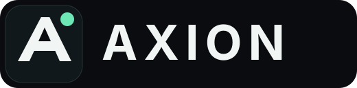
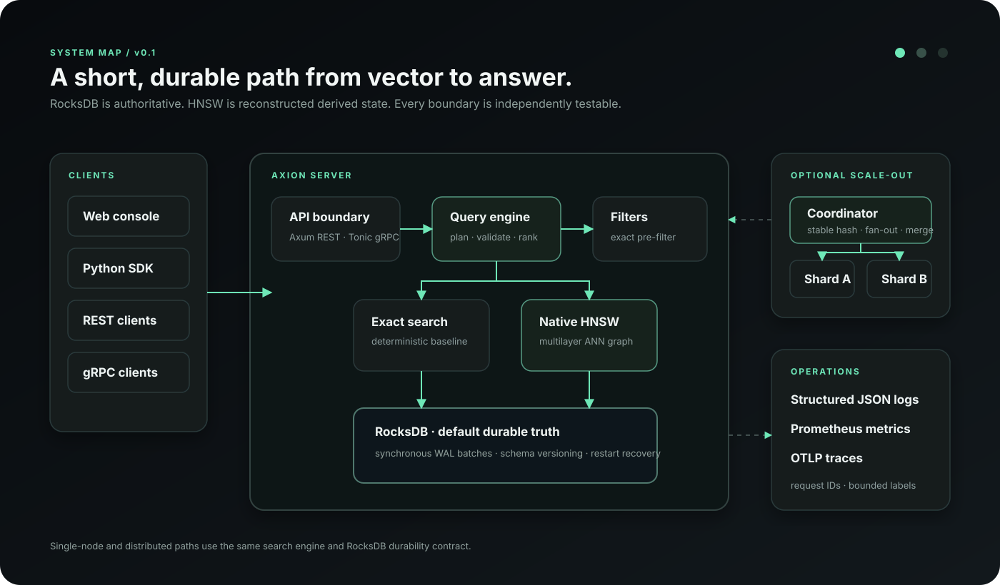
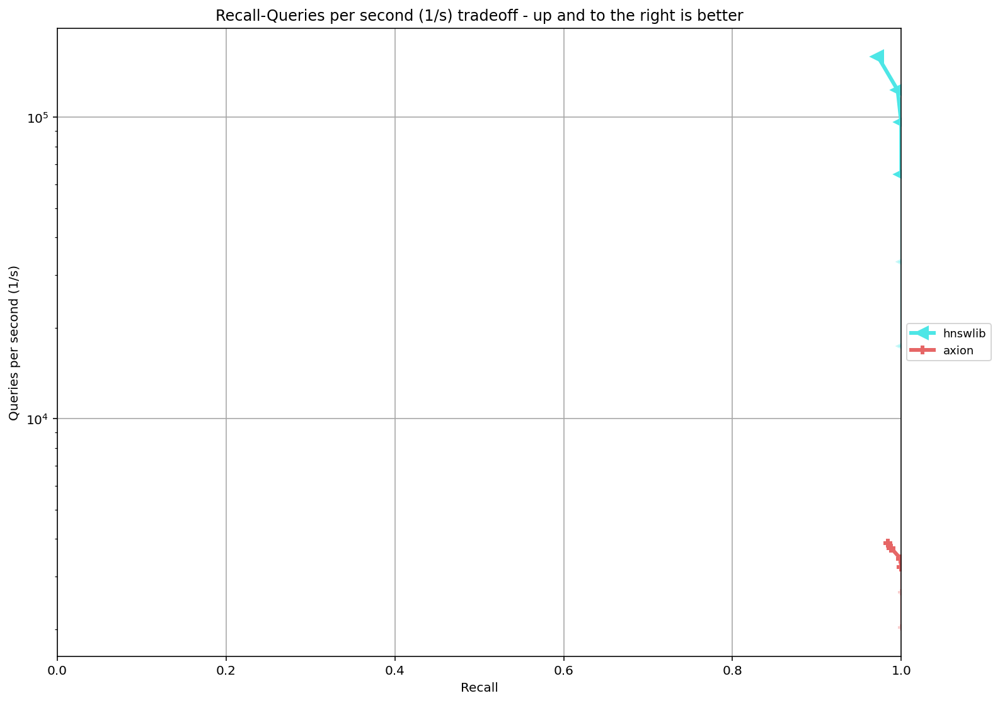
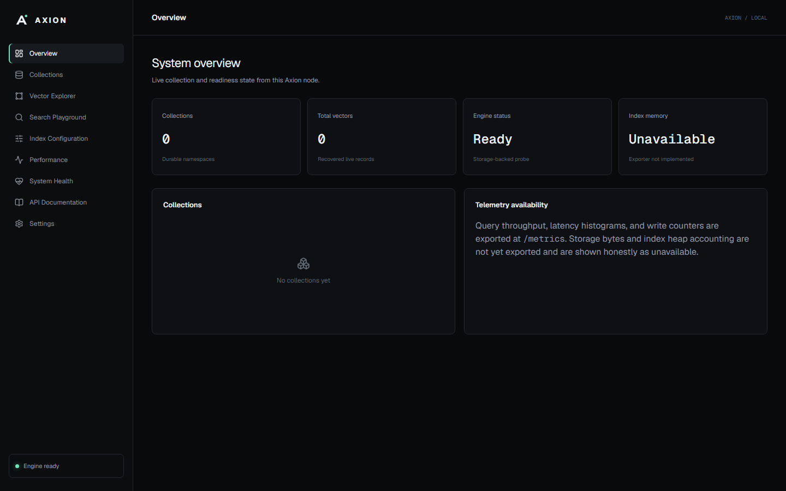

Native multilayer HNSW
Rust implementation with explicit construction and search breadth controls, stable tie ordering, and exact search as a correctness oracle.

AXION GitHubOpen-source vector infrastructure
Axion is a durable Rust vector engine with native HNSW, RocksDB, REST and gRPC APIs, a typed Python client, and deployment paths that are validated—not merely documented.
Move your pointer to perturb the query vector.
THE PARTS THAT MATTER
01 / THE ENGINE
API boundaries validate. The collection engine plans and synchronizes. Exact or HNSW indexes score candidates. RocksDB owns durable truth.

02 / CAPABILITIES
Every claim below has an implementation and an executable validation path in the repository.
Rust implementation with explicit construction and search breadth controls, stable tie ordering, and exact search as a correctness oracle.
RocksDB is the default engine. Synchronous write batches commit records before acknowledgement and rebuild the derived graph deterministically.
Boolean filters, nested JSON fields, documented exact pre-filter semantics, bounded pagination, and atomic batch upserts.
Versioned OpenAPI and protobuf contracts plus typed synchronous and asynchronous Python clients.
Structured JSON logs, request IDs, Prometheus counters and histograms, optional OTLP tracing, and separate health probes.
Hardened multi-stage images, Compose, Kubernetes resources, secret references, resource limits, health probes, and persistent volumes.
03 / MEASURED SEARCH
The committed comparison uses the official ANN-Benchmarks framework, its standardized
random-xs-20-euclidean dataset, three timed runs, and one pinned CPU.

Criterion measures Rust components. ANN-Benchmarks measures comparative search behavior. The repository publishes configurations, raw CSV, host metadata, exact revisions, and limitations.
04 / DEPLOYMENT
The kind workflow builds and loads real images, writes authenticated data, deletes the live server pod, waits for replacement, and verifies the vector from the same PVC.
Non-root read-only containers, a named RocksDB volume, health checks, API authentication, and the full console.
docker compose up --build -d
Deployments, Services, ConfigMap, Secret references, PVC, restricted security context, resources, startup/readiness/liveness probes.
make kind-test
Deterministic single-owner sharding, parallel fan-out, stable global merge, and explicit partial-result semantics.
make distributed-test
Clear boundary: the 0.1.0 coordinator partitions but does not replicate data and does not claim consensus, automatic failover, or automatic rebalancing.
05 / OPERATIONS
These views were captured by Playwright while driving the production Next.js console against the Rust backend. Select a view to inspect it.

06 / DEVELOPER EXPERIENCE
Run Axion, create a collection, write a vector, and search. The typed client validates locally and preserves structured metadata.
from axion_client import AxionClient
client = AxionClient("http://localhost:8080")
client.create_collection(
"documents", dimensions=384, metric="cosine"
)
client.upsert("documents", [{
"id": "doc-1", "values": embedding,
"metadata": {"team": "search"}
}])
results = client.search("documents", query, top_k=10)OPEN SOURCE · MIT LICENSE
Inspect the engine, reproduce the evidence, and deploy it on infrastructure you control.